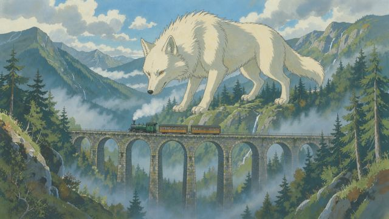
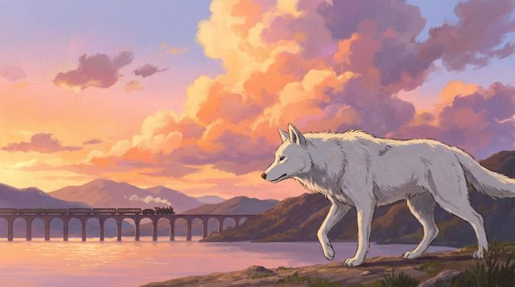
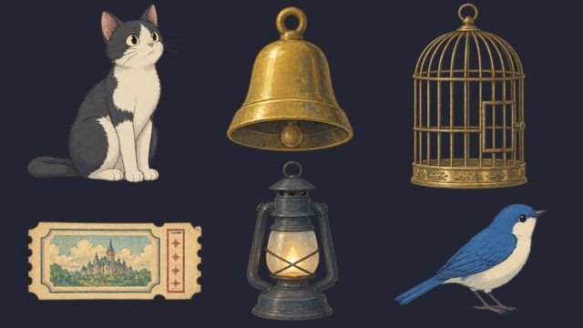
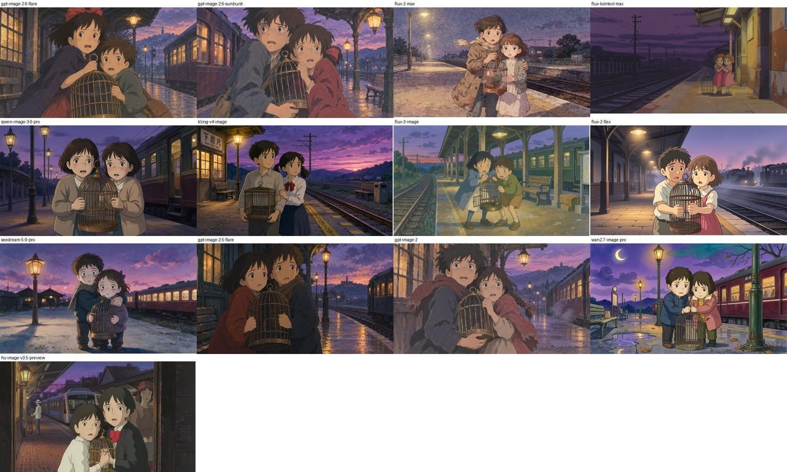
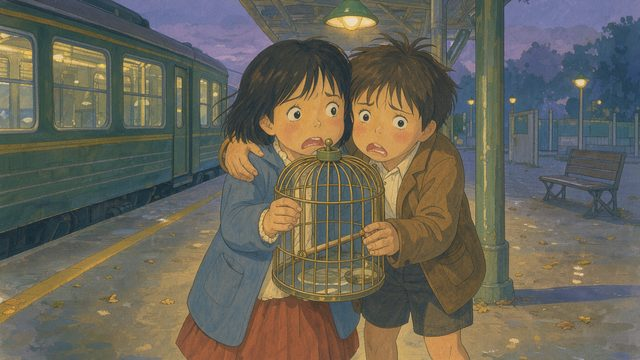
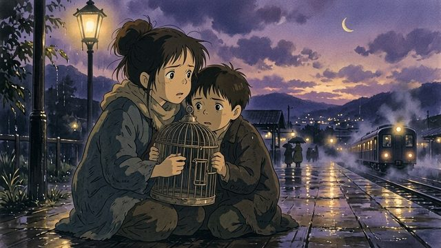
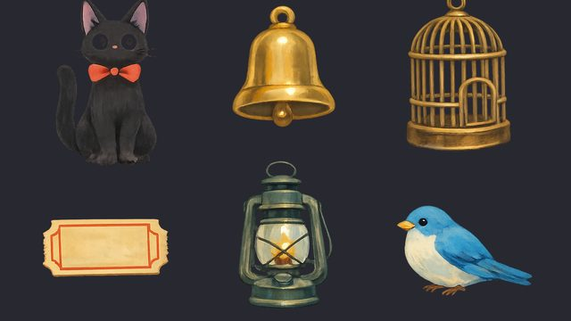

Benchmark · · 6 min read
Image model bench: what 25 models cost and where they fail
We needed art for a short film: frightened faces, wide plates and prop sheets with a real transparent background. We ran four passes over image models on one gateway, APIMart, and kept the cost, the time and our verdict for each use.
Verdict
Use gpt-image-2.6-flare at $0.0265 an image for faces, plates and cut-out props. Use gpt-image-2 at $0.0085 when cost matters. Only 4 of 15 scored models sit on the cost-quality frontier; the other 11 cost more or score lower. New in pass 4: flux-3-image-klein at $0.0072 is the cheapest scored model, but it paints a backdrop instead of returning alpha.
| When you need | Pick | Cost | Median time | Measured |
|---|---|---|---|---|
| A new keyframe set, one character across shots | ChatGPT Instant | $20 plan | 70 s, one at a time | All 13 keyframes kept the same boy, girl and wolf as each other. About $0.013 an image at 50 a day (a model); the daily cap is unmeasured. |
| Keyframes that must match an existing cut | gpt-image-2.6-flare with frames of the cut as references | $0.09 to $0.11 | not timed | Cut 9: the boy and the train match the film. The ChatGPT set above did not match the code-built cut (video bench). |
| Stills and plates at the lowest price, no cut-outs | flux-3-image-klein | $0.0072 | 12.9 s | 3.75 of 5, one run per prompt. Frightened faces read well. Paints a white backdrop instead of alpha. |
| Bulk and parallel | gpt-image-2 | $0.0085 | 22.8 s | 4.50 of 5. 20 calls at once finished in 39.5 s. Dropped alpha in 1 of 2 prop runs. |
| Faces, plates and cut-out props | gpt-image-2.6-flare | $0.0265 | 13.2 s | 5.00 of 5, real alpha in both runs. Also the keyframe model for the veo clips in cut 9. |
- Faces and feargpt-image-2.6-flareScore 5 in both runs
- Wolf and platesgpt-image-2.6-flareflux-3-image is the painterly second, $0.038
- Cut-out propsgpt-image-2.6-flareReal alpha in both runs
- Cheap bulkgpt-image-2$0.0085; dropped alpha in 1 of 2 prop runs
- Same character from a referenceseedream-5-0-pro or 2.6-flareScore 4 of 5
Method
- PromptSix prompts: fear, wolf, props, valley, cine, pair.
- Generate25 models, 1K, 16:9, one image per call. Cost and time come from the task result.
- Score0 to 5 by eye. Alpha is measured in code: clear above 0.4, half below 0.03.
- RepeatThe top 5 ran again, to see run-to-run drift.
- Pass 1: 15 models, 3 prompts. 38 of 45 images came back, $0.93.
- Pass 2: 14 models, 4 prompts, scored on style, emotion and faces, text-free output and edge quality. $2.38 with the reference test.
- Pass 3: 6 models, 6 images each, $0.94. A repeat of the 4 pass 2 prompts, plus a wide wolf plate and a character pair.
- Pass 4: 3 models new to the bench, the 4 pass 2 prompts, one run each, $0.25. gpt-image-1.5 stopped after one $0.163 image.
Frontier
4 of 15 scored models are on the frontier (flux-3-image-klein, gpt-image-2, and the tied pair 2.6-flare and 2.6-sunburst): nothing is cheaper and scores higher. flux-3-image-klein is the cheap end at $0.0072 for a 3.75, with no alpha; gpt-image-2 is the cheapest with alpha, $0.0085 for a 4.5. gpt-image-2.6-sunburst and gpt-image-2.6-flare tie at the top, $0.0265 for a 5.0. flux-2-max and flux-2-flex cost $0.08, three times more, and score 3.25 and 3.5.
Data behind the chart
| Model | $ per image | Score | Status |
|---|---|---|---|
| flux-3-image-klein | $0.0072 | 3.75 | on the frontier |
| gpt-image-2 | $0.0085 | 4.50 | on the frontier |
| mai-image-2.6-flash | $0.0154 | 3.75 | beaten |
| hy-image-v3.5-preview | $0.0192 | 3.25 | beaten |
| gpt-image-2.5-flare | $0.0261 | 4.50 | beaten |
| gpt-image-2.6-flare | $0.0265 | 5.00 | on the frontier |
| gpt-image-2.6-sunburst | $0.0265 | 5.00 | on the frontier |
| qwen-image-3.0-pro | $0.0286 | 3.25 | beaten |
| seedream-5-0-pro | $0.0360 | 3.50 | beaten |
| flux-3-image | $0.0384 | 3.50 | beaten |
| wan2.7-image-pro | $0.0544 | 3.75 | beaten |
| kling-v4-image | $0.0571 | 2.50 | beaten |
| flux-kontext-max | $0.0640 | 2.50 | beaten |
| flux-2-max | $0.0800 | 3.25 | beaten |
| flux-2-flex | $0.0800 | 3.50 | beaten |
Winners by use
Faces and fear
gpt-image-2.6-flare gave true fear: wide eyes, huddled kids, $0.0265. 2.6-sunburst is equal but slower (about 30 s against 13 s, median). flux-2-flex and flux-3-image draw calmer faces; flux-2-max is speckled and flux-kontext-max shows tiny distant kids. In pass 1, flux-2-pro, gemini-3-pro-image-preview and minimax-h3-image-highspeed drew calm or stiff faces.


Wolf and plates
flare and sunburst were richest. flux-3-image has the best Ghibli background feel at $0.038, but its wolf is smaller. seedream-5-0-pro and qwen-image-3.0-pro are clean. In pass 1 every model made a good plate. The new wide wolf plate (cine) scored 5 for flare and sunburst, 4 for gpt-image-2, seedream and gemini, 3 for flux-3-image.




Cut-out props
Only gpt-image-2, 2.5 and 2.6 (flare, sunburst) and wan2.7-image-pro give real alpha. Use gpt-image-2.6-flare: the cleanest, with hard edges, and real alpha in 2 of 2 runs. Flux and Seedream draw a fake checkerboard or a white backdrop. Shown on a dark ground.



Cost-efficient
gpt-image-2 at $0.0085 is the pick for bulk. Use gpt-image-2.6-flare at $0.0265 when quality matters.
Repeat runs
We ran the top 5 again on the same 4 prompts. 4 of 20 scores changed, and 2 moved by 2 points or more. Both 2.6 models held all 8. The risk sits in the cheaper models.
| Model | Fear | Wolf | Valley | Props |
|---|---|---|---|---|
| gpt-image-2.6-flare | 5 → 5 | 5 → 5 | 5 → 5 | 5 → 5 |
| gpt-image-2.6-sunburst | 5 → 5 | 5 → 5 | 5 → 5 | 5 → 5 |
| gpt-image-2 | 4 → 4 | 4 → 4 | 4 → 4 | 5 → 2 |
| flux-3-image | 3 → 3 | 3 → 3 | 4 → 3 | 2 → 2 |
| seedream-5-0-pro | 3 → 4 | 4 → 2 | 4 → 4 | 2 → 2 |


Reference image
All six models in the first test accept image_urls, a list of URLs or base64 data URIs, in the same request. All kept the style and layout; the Gemini and gpt outputs reproduced the reference composition most closely, while seedream and flux-3 restyled the bridge more freely. Cost: $0.200 for the six.
Pass 3 asked for the same girl in a new pose. 2 of 6 scored 4 (flare, seedream). sunburst, gpt-image-2 and gemini scored 3 because they copied the reference's gold frame border into the new image; flux-3-image changed her skirt to trousers.


Round 2 test: six models, one reference

Oddities
- Gateway
midjourney: all 4 requests rejected with
model_price_error. The price is not set on APIMart; this is the gateway, not the model. - Resolution
kling-v4-image needs 2K or higher, so we ran 2K.
- Text
kling painted a sign and a lantern in kanji. qwen-image-3.0-pro put Japanese text on the ticket.
- Alpha
Flux and Seedream paint the transparency grid into the image instead of returning alpha. gpt-image-2 once drew a backdrop. In pass 4, mai-image-2.6-flash drew the grid too, flux-3-image-klein a plain white backdrop, and gpt-image-1.5 returned alpha but cut out the cat’s eyes.
- Failures
imagen-4.0-apimart failed all 3 pass 1 requests (
KeyError 'result', about 62 s each). grok-imagine-image-2.0 rejects thesizeparameter and was not retried. seedream-5-5 failed the fear prompt (status failed, $0, reason not read).
Speed
Median seconds from submit to finished file for the 15 scored models. gpt-image-2.6-flare is the fastest of the strong models (13 s); gpt-image-2 takes about 23 s at a third of the price.
Data behind the charts
| Model | n | Median s | $ per image | Quality |
|---|---|---|---|---|
| flux-3-image-klein | 4 | 12.9 | $0.0072 | 3.75 |
| gpt-image-2.6-flare | 10 | 13.2 | $0.0265 | 5.00 |
| qwen-image-3.0-pro | 4 | 13.2 | $0.0286 | 3.25 |
| mai-image-2.6-flash | 4 | 15.1 | $0.0154 | 3.75 |
| hy-image-v3.5-preview | 4 | 20.3 | $0.0192 | 3.25 |
| flux-kontext-max | 4 | 21.6 | $0.0640 | 2.50 |
| gpt-image-2.5-flare | 7 | 22 | $0.0261 | 4.50 |
| flux-3-image | 13 | 22.5 | $0.0384 | 3.50 |
| gpt-image-2 | 13 | 22.8 | $0.0085 | 4.50 |
| flux-2-flex | 4 | 26.3 | $0.0800 | 3.50 |
| wan2.7-image-pro | 4 | 28.6 | $0.0544 | 3.75 |
| gpt-image-2.6-sunburst | 10 | 30.2 | $0.0265 | 5.00 |
| flux-2-max | 4 | 34.7 | $0.0800 | 3.25 |
| kling-v4-image | 4 | 35.3 | $0.0571 | 2.50 |
| seedream-5-0-pro | 13 | 57.2 | $0.0360 | 3.50 |
| ChatGPT Instant | 13 | 70 | $0.0133 (model) | unscored |
- Quality per dollar: gpt-image-2 gives 4.5 of 5 at $0.0085, flare 5.0 at $0.0265. Flare is faster; gpt-image-2 is 3x cheaper. For batch fan-out, price matters more than a 10 s difference.
- The quality gap is in faces and transparent edges, which the bench scored; on plain scenes the two are hard to tell apart.
- Concurrency test, 2026-11-22: 20 gpt-image-2 calls sent at once ($0.17). All 20 completed, the median call took 19.9 s, and the whole batch finished in 39.5 s, about 30 images a minute. No rate-limit errors at that size. Larger batches were not tried.
Where the $10 went
The first $10 of APIMart credit was gone in about a day. Half of it, $4.90, went on 16 test video clips, not on images. The whole image bench was $4.50 for 157 requests, and the 16 images used in the film were $0.57.
| Spend | USD | Share | Note |
|---|---|---|---|
| Video spike: 16 clips, 9 models | $4.90 | veo3.1-quality alone was $1.00; kling-v4-flash 2 clips $0.86; kling-v3 $0.67; seedance 2.0 and 2.5-flash about $0.65 each | |
| Image bench pass 2: 60 images, 14 models | $2.18 | flux-2-max and flux-2-flex $0.32 each, flux-kontext-max $0.26: the expensive Flux models | |
| Image bench pass 3: repeat runs, 36 images | $0.94 | flux-3-image $0.23, seedream-5-0-pro $0.22, flare $0.16 | |
| Image bench pass 4: 10 requests, 9 images, 3 models | $0.25 | gpt-image-1.5 $0.16 for one image; 2026-11-22, after the $9.97 reading | |
| Image bench pass 1: 45 images, 15 models | $0.93 | about $0.02 an image, 38 came back | |
| Film stills: 16 images in 2.6-flare | $0.57 | used in the generated-frames attempt | |
| Reference-image test: 6 images | $0.20 | ||
| Unlogged probes and failures | $0.25 | the account shows $9.97 used; $9.72 is itemised |
- Cost scales with price per call times how many models you try, not with how good the winner is. The winner, gpt-image-2.6-flare, is $0.0265 an image.
- Cheaper tests would have been a one-clip-per-model screen: the spike ran two prompts on seven models to compare faces and push-ins.
- The expensive models (Flux 2 max and flex, veo3.1-quality, kling-v4-flash) were not better than the cheap ones for our use.
All scored image models in one table
Every image model with a quality score. The nine video models are in the video bench table. Unscored image models (pass 1 only, or failed) are in the pass tables below.
| Kind | Model | Cost | Median s | Quality | Scores |
|---|---|---|---|---|---|
| image | flux-3-image-klein | $0.0072 per image | 12.9 | 3.75 | style 4, emotion_faces 4, text_free 5, edge_alpha 2 |
| image | gpt-image-2 | $0.0085 per image | 22.8 | 4.50 | style 4, emotion_faces 4, text_free 5, edge_alpha 5 |
| image | mai-image-2.6-flash | $0.0154 per image | 15.1 | 3.75 | style 4, emotion_faces 4, text_free 5, edge_alpha 2 |
| image | hy-image-v3.5-preview | $0.0192 per image | 20.3 | 3.25 | style 3, emotion_faces 3, text_free 4, edge_alpha 3 |
| image | gpt-image-2.5-flare | $0.0261 per image | 22 | 4.50 | style 4, emotion_faces 4, text_free 5, edge_alpha 5 |
| image | gpt-image-2.6-flare | $0.0265 per image | 13.2 | 5.00 | style 5, emotion_faces 5, text_free 5, edge_alpha 5 |
| image | gpt-image-2.6-sunburst | $0.0265 per image | 30.2 | 5.00 | style 5, emotion_faces 5, text_free 5, edge_alpha 5 |
| image | qwen-image-3.0-pro | $0.0286 per image | 13.2 | 3.25 | style 4, emotion_faces 4, text_free 3, edge_alpha 2 |
| image | seedream-5-0-pro | $0.0360 per image | 57.2 | 3.50 | style 4, emotion_faces 3, text_free 5, edge_alpha 2 |
| image | flux-3-image | $0.0384 per image | 22.5 | 3.50 | style 4, emotion_faces 3, text_free 5, edge_alpha 2 |
| image | wan2.7-image-pro | $0.0544 per image | 28.6 | 3.75 | style 3, emotion_faces 3, text_free 5, edge_alpha 4 |
| image | kling-v4-image | $0.0571 per image | 35.3 | 2.50 | style 4, emotion_faces 2, text_free 2, edge_alpha 2 |
| image | flux-kontext-max | $0.0640 per image | 21.6 | 2.50 | style 2, emotion_faces 2, text_free 5, edge_alpha 1 |
| image | flux-2-max | $0.0800 per image | 34.7 | 3.25 | style 3, emotion_faces 3, text_free 5, edge_alpha 2 |
| image | flux-2-flex | $0.0800 per image | 26.3 | 3.50 | style 4, emotion_faces 3, text_free 5, edge_alpha 2 |
Pass tables
Pass 1 table: 45 requests
| Model | OK of 3 | Avg seconds | Avg $ per image |
|---|---|---|---|
| gemini-3.1-flash-lite-image | 3 | 21 | 0.027 |
| gemini-nano-banana-2.1 | 3 | 46 | 0.032 |
| gemini-3-pro-image-preview | 3 | 25 | 0.020 |
| gpt-image-2.5-flare | 3 | 21 | 0.026 |
| gpt-image-2 | 3 | 24 | 0.009 |
| seedream-5-0-pro | 3 | 62 | 0.036 |
| seedream-5-5 | 2 | 24 | 0.016 |
| flux-3-image | 3 | 27 | 0.038 |
| flux-2-pro | 3 | 19 | 0.036 |
| qwen-image-3.0 | 3 | 9 | 0.021 |
| minimax-h3-image-highspeed | 3 | 21 | 0.036 |
| grok-imagine-image-2.0 | 0 | 0 | 0.000 |
| z-image-turbo | 3 | 6 | 0.010 |
| mai-image-2.7-flash | 3 | 16 | 0.008 |
| imagen-4.0-apimart | 0 | 0 | 0.000 |
Pass 2 table: time, cost and scores
| Model | OK of 4 | Avg seconds | Avg $ per image | Style | Emotion | Text-free | Edge | Real alpha |
|---|---|---|---|---|---|---|---|---|
| gpt-image-2.6-flare | 4 | 12 | 0.026 | 5 | 5 | 5 | 5 | yes |
| gpt-image-2.6-sunburst | 4 | 29 | 0.026 | 5 | 5 | 5 | 5 | yes |
| flux-2-max | 4 | 34 | 0.080 | 3 | 3 | 5 | 2 | no |
| flux-kontext-max | 4 | 22 | 0.064 | 2 | 2 | 5 | 1 | no |
| qwen-image-3.0-pro | 4 | 13 | 0.029 | 4 | 4 | 3 | 2 | no |
| kling-v4-image | 4 | 35 | 0.057 | 4 | 2 | 2 | 2 | no |
| flux-3-image | 4 | 24 | 0.038 | 4 | 3 | 5 | 2 | no |
| flux-2-flex | 4 | 25 | 0.080 | 4 | 3 | 5 | 2 | no |
| seedream-5-0-pro | 4 | 53 | 0.036 | 4 | 3 | 5 | 2 | no |
| gpt-image-2.5-flare | 4 | 22 | 0.026 | 4 | 4 | 5 | 5 | yes |
| gpt-image-2 | 4 | 24 | 0.009 | 4 | 4 | 5 | 5 | yes |
| wan2.7-image-pro | 4 | 29 | 0.054 | 3 | 3 | 5 | 4 | yes |
| hy-image-v3.5-preview | 4 | 20 | 0.019 | 3 | 3 | 4 | 3 | no |
Pass 4 table: 10 requests
| Model | OK | Avg seconds | Avg $ per image | Style | Emotion | Text-free | Edge | Real alpha |
|---|---|---|---|---|---|---|---|---|
| flux-3-image-klein | 4 of 4 | 13 | 0.0072 | 4 | 4 | 5 | 2 | no |
| mai-image-2.6-flash | 4 of 4 | 15 | 0.0154 | 4 | 4 | 5 | 2 | no |
| gpt-image-1.5 | 1 of 2 | 38 | 0.163 | not scored, props only | yes | |||
Contact sheets, pass 2



ChatGPT Instant, the plan-priced lane
All 13 keyframes of the painted film came from ChatGPT Instant in a signed-in browser, not from the API. It has no per-image price, a daily cap, and it is slow because a browser drives it. It is not scored on the 0 to 5 rubric above: it was used on the film shots, not the bench prompts.
| Item | Value | Basis |
|---|---|---|
| Time per image | about 70 s | Measured: 13 images landed 54 to 146 s apart, median 70 s, 16 min in total. About 5 times slower than gpt-image-2 (23 s), and not parallel. |
| Price per image, inside the cap | $20 / (images per day × 30) | Model: $0.67 at 1 per day, $0.013 at 50 per day, $0.0067 at 100 per day. We did not measure the daily cap; we only know we hit it once and it did not reset for hours. |
| Driving it from an agent | Not measured | Each image took several browser tool calls, so a model pays tokens to click. That is a real cost on top of the plan and the reason for the script below. |
| Consistency | Good | Best match to our character sheet of anything we tried: all 13 shots kept the same boy, girl and wolf. |
- Use it as the free heavy lifter while the cap lasts, and gpt-image-2 through the API when it runs out or when shots are needed in parallel. At $0.0085 and 23 s per call with 20 calls in parallel (39.5 s), the API wins on speed; the plan is cheaper per image only above about 80 images a day (and only if you use the whole cap).
- Google AI Mode is a free fallback. One test prompt (signed in, "Generate an image: ..."): an image in about 10 to 13 s at 1376x768, first try, no cap or limit notice. By eye it is more muted and painterly than ChatGPT but less crisp, with a small blurry crane and the wrong tram colours, so ChatGPT is still the pick for character shots. One prompt only; the cap is unknown.
- A Playwright script replaces the browser tool calls: it attaches to a Chrome you signed in to yourself. One selector pass was done in a live ChatGPT tab, but the full run (click, insert text, save) was not verified end to end; sign-in stays manual.
Video models and the film cost
The video quick test, its 16 clips and charts moved to the video model bench.
What the film cost, and whether code is cheaper, is now on the video bench: film cost.
Pass 4: three cheap models new to the bench
flux-3-image-klein is the cheapest scored image at $0.0072, about as fast as flare (12.9 s), and its frightened faces beat flux-3-image’s. It paints a white backdrop on the props sheet, so gpt-image-2 stays the cheap pick for cut-outs. mai-image-2.6-flash scores the same 3.75 at twice the price. gpt-image-1.5 billed $0.163 for one props image, so the run stopped there.



Image models to test next
Ranked by how likely a run is to move the cost-quality frontier, from this bench's own numbers. A price is the model's own only where it ran in pass 1; otherwise it is a tested sibling's, as named. Untested ids come from the APIMart model list (266 ids, 2026-11-22) checked against every model in the results files.
- mai-image-2.7-flash ran in pass 1 at $0.0082 (its own price), never scored. Its sibling 2.6-flash scored 3.75 at $0.0154, so it would need a 4 to join the frontier.
- z-image-turbo ran in pass 1 at $0.010 and 6 s (its own numbers), never scored. The fastest pass 1 model.
- wan2.7-image sibling wan2.7-image-pro returned real alpha at $0.0544 (edge 4), the only maker outside OpenAI to do so. A cheaper non-pro that keeps alpha would move the frontier.
- seedream-5-0-lite, seedream-5-0-flash sibling seedream-5-0-pro scored 3.5 at $0.036; seedream-5-5 cost $0.016 in pass 1.
- gemini-3.1-flash-image-preview siblings cost $0.020 to $0.032 in pass 1 and were not scored.
- qwen-image-2.0 sibling qwen-image-3.0 cost $0.021 in pass 1; 3.0-pro scored 3.25.
Limits
- 3 or 4 prompts per model, one image each; only 5 models have a second run. A lucky draw shows as a result.
- The 0 to 5 scores are one reviewer's eyes. The alpha check is the only measured test.
- The frontier uses pass 2 scores only. Models seen only in pass 1 are unscored.
- Not tested: image editing beyond one reference, native 2K or 4K (apart from kling), Midjourney. Video limits are on the video bench.
- Prices and speeds are what the gateway reported on 21 Nov 2026 and will change.
Used in
These images were made for Ghibli Claude, our short film rebuilt in code. Six stills from gpt-image-2.6-flare replace 4.8 s of the painted cut. See the cut. All 16 generated images cost $0.57; flare beat flux-3-image on all 8 frames.
Generated 
In the film, 32.1 s The wolf looms over the viaduct

Generated 
In the film, 34 s The empty cage and the blue feather

Generated 
In the film, 34.85 s The children look up in terror

Generated 
In the film, 35.55 s Hands over mouths, tears

Generated 
In the film, 36.15 s The boy, close up

Generated In the film, 38.45 s The girl holds the feather
Prompts used
Every image prompt, verbatim from the code
Pass 1 (run_all.py): 15 models
Painted gouache sheet in a Ghibli-inspired style: six small objects well apart on a fully transparent background, hard clean edges, no shadows and no ground: a brass bicycle bell, a folded paper crane, a ticket stub, a red conductor cap, a yellow scarf, a small brown suitcase. No text, no people.
Ghibli-style anime film still: a boy and a girl on a seaside path at dusk, both frightened, eyes wide, faces pale, backing away from a giant white wolf looming at the edge of frame. The boy's open empty hands tremble; their pet paper bird is gone. Soft painterly light, no text.
Wide painterly background plate, Ghibli-inspired: a stone railway viaduct and a tunnel mouth on a flowering cliff above a blue sea, wisteria, golden afternoon light, no people, no text.
Pass 2 (run2_prompts.py): 14 models; flare and sunburst models at quality high
Ghibli-inspired hand-painted gouache style, soft film-still look, no text.
Two frightened children clutching an empty birdcage on a dusk train platform, wide eyes, pale faces, huddled close, lamplight and violet dusk.
A giant white wolf looming over a stone viaduct, a tiny train crossing below, misty mountains, epic scale.
Prop sheet on a fully transparent background, six separate objects well spaced with hard clean edges and no shadows: a cat, a bell, a birdcage, a ticket, a lantern, a bird.
Wide misty valley background plate, layered hills, soft fog, 16:9, no people.
Pass 3 (run3.py): the 4 pass 2 prompts again, plus cine and pair
Ghibli-inspired hand-painted gouache style, soft film-still look, no text.
Ultra-wide cinematic establishing shot: a giant white wolf walking along a lake shore at golden dusk, a small train on a long bridge far away, layered mountains, huge sky of glowing clouds, no people.
Same girl as in the reference image (black wavy hair, yellow scarf, white shirt), same painting style, now standing still on a quiet train platform at dusk looking up at a small white paper crane, full body, no text.
Pass 4 (run4.py): the 4 pass 2 prompts and style line, one run each
Reference test (ref.py): 6 models
Same hand-painted Ghibli gouache style and palette as the reference image: a small steam train crossing a stone bridge in a misty valley, no people, no text.
Film stills (film_frames_gen_v2.py): gpt-image-2.6-flare (quality high) and flux-3-image, 8 frames each
Hand-painted Studio Ghibli gouache film still matching the reference images' art style, palette and character designs (the boy has messy brown hair, a red cap with gold button and a navy-trimmed white sailor collar; the girl has black wavy hair, a yellow scarf and white shirt). No text, no watermark.
Wide establishing shot: a colossal white wolf with red face markings, as in the second reference, towers and looms over the long stone arched railway viaduct of the first reference, its huge head and shoulders rising above the arches in dusk mist, a tiny red train on the viaduct far below. Violet-pink dusk sky, menace and awe, calm composition with empty sky at the top.
Wide shot of the boy in red cap and the girl in yellow scarf standing close together on a stone railway platform at dusk, looking up in terror at something huge off-frame at upper right, the girl clutching an empty open birdcage, both pale with wide frightened eyes and trembling, no smiles, long violet shadows.
Medium shot of the boy in red cap and the girl in yellow scarf huddled together, both with hands pressed over their mouths, eyes wide with fear and tears running down their cheeks, looking up and to the right, dusk light, an empty birdcage hanging at the edge of frame.
Close-up of the boy in the red cap, face crumpled in fear and grief, big tears on his cheeks, small trembling mouth, wide shining eyes looking up, soft dusk rim light, painterly, no smile.
Close-up of the girl with black wavy hair and yellow scarf, terrified, tears streaming, hands over her mouth, wide eyes looking up, sea-blue dusk background, painterly, no smile.
Insert close-up of a small empty brass birdcage with its little door open, hanging on a hook at a train-station post at dusk, a single pale blue feather caught on the floor of the cage, soft violet bokeh background of a lake and sunset clouds, melancholy, painterly.
Close shot of the girl in yellow scarf crouching, cupping a single pale blue feather in both hands against her chest, eyes closed, a tear on her cheek, quiet deep grief, dusk lake behind, soft warm rim light, painterly.
Quiet reconciliation: the boy in red cap and the girl in yellow scarf sitting side by side on a grassy lakeside bank at golden dusk, her head leaning on his shoulder, exhausted, gently sad but together, a small blue feather resting between them, the white wolf lying asleep far away on the path, wide 16:9 scene.
Update log
- First published: passes 1 to 3.
- Video results moved to their own page; chart explorer added; fixes from a live check at three widths.
- Pass 4: flux-3-image-klein, mai-image-2.6-flash and gpt-image-1.5 added, $0.25; test-next list added.
- Source and data moved into one postscript; the pass tables moved under All models; the speed caption now says seconds run to the end of the task (the download came after).
Postscript: source and data
Where the code and data are, for people and agents
The image-model-bench folder on GitHub holds every script and data file behind this page. Its README lists each file in one line.